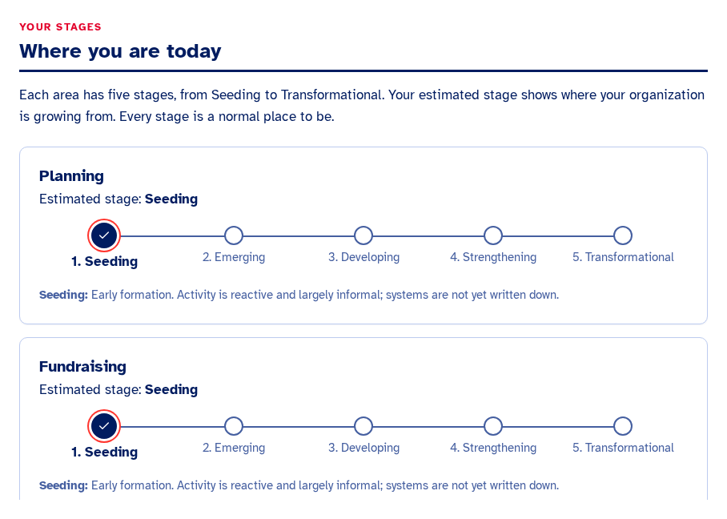
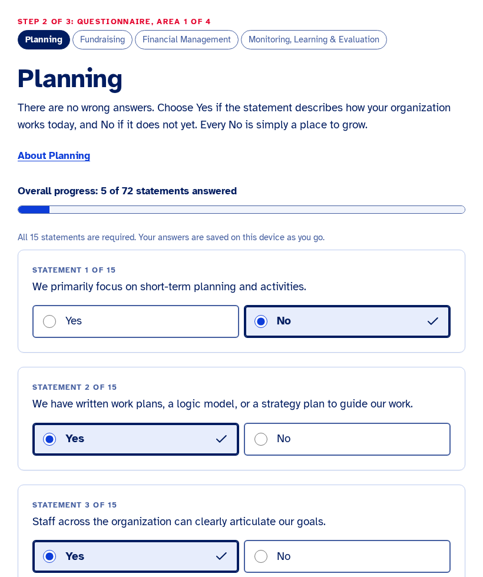
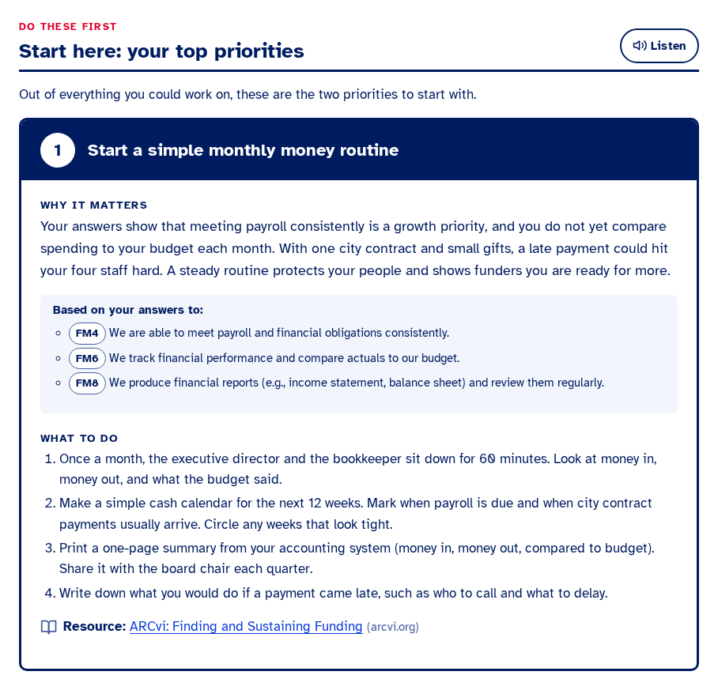
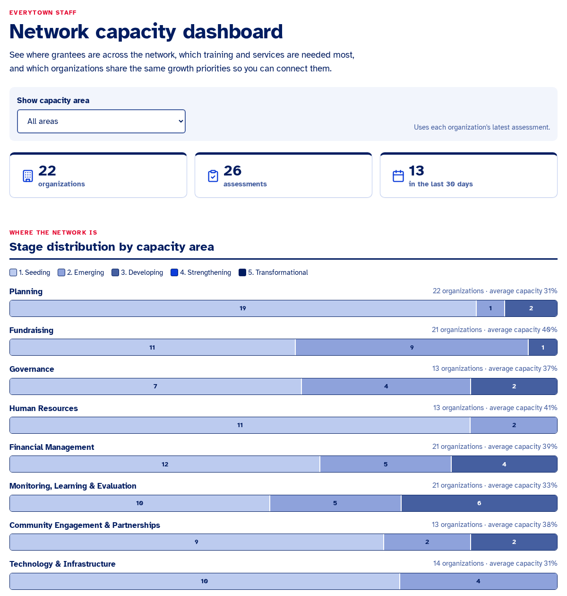
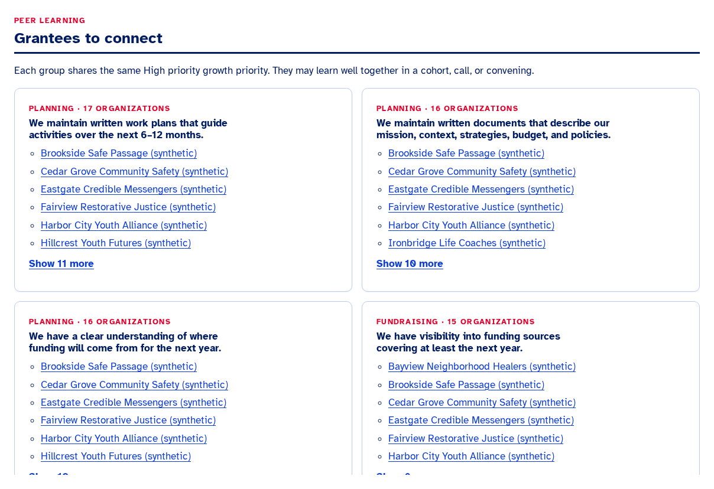
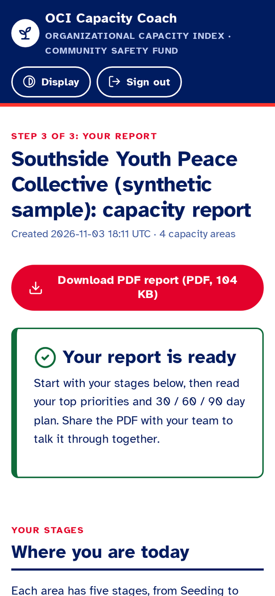

AWS Breaking Barriers 2026 · Community Empowerment · Everytown for Gun Safety
OCI Capacity Coach
Every community violence intervention leader gets a plain-language answer in under a minute: what is true about their organization, the one or two things to do first, and a 30 / 60 / 90 day plan. Everytown staff see the whole network.
d2mi2h3eu8y69s.cloudfront.net
The problem
The manual pilot worked. Two people cannot hand-write reports for a whole network.
45
organizations assessed in the 2025 Organizational Capacity Index pilot
2
CSF staff wrote every individualized report by hand
140+
grantee and alumni organizations still waiting for the same support
What the pilot taught us: Planning was the weakest domain across the cohort, and Planning, Fundraising and Financial Management move with overall capacity (r ≥ .88). So the Coach starts with those areas.
Onsite interview with Everytown
What Everytown told us, and what we built
I can read this even though I'm at an 8th grade reading level and I've been to prison.
Plain language. Reports written for an 8th grade reading level, warm and explained. Read aloud, Spanish.
Out of the 10 things you could fix, here's one or two priorities that you should do first.
"Start here". At most two first priorities, each tied to the answers behind it, before the full plan.
I know what training they need. I know what services they need.
Staff dashboard. The most common growth priorities across the network.
Identify groups of grantees with similar problems that we could connect with each other.
Grantees to connect. Groups that share the same high priority growth priority.
Maybe I could start benchmarking.
Ready for it. A staff-only benchmarking preview from a SQL view. Grantees never see peer comparisons.
Who we serve
A learning tool, not an evaluation
CVI organization leaders
Executive directors of small nonprofits, 5 to 20 staff. Many lead with lived experience.
CSF program staff
Which training and services to offer, and which grantees to connect.
Everytown Labs
A forkable build to iterate toward production, not rebuild.

Results lead with a stage ladder. Gaps are called growth priorities. Every stage is a normal place to be.
Live demo
From answers to "Start here" in under a minute

Answer. One area per screen, Yes or No. Choose which areas to assess today.
See where you are. Stages appear instantly. The full AI report is ready in 38 to 47 seconds.

Start here. One or two first priorities, the answers behind them, a vetted resource. Then the 30 / 60 / 90 plan and PDF.
How it works
Deterministic scores first. AI second. Validated always.
The LLM never scores. Reference engine unchanged, passes all 3 answer keys.
Grounded or dropped. Every priority and action cites real growth priorities.
No invented links. Resources only from a vetted 19-entry catalog.
For Everytown staff
See the whole network, not one report at a time


Stage distribution
Where every grantee is, per area.
Top network needs
The most common growth priorities: what training and services to offer.
Grantees to connect
Groups that share a high priority growth priority.
Benchmarking preview
Peer percentile per area, staff only. Grantees never see it.
User interface and design
Accessibility is the feature, not a checkbox
WCAG 2.2 AA
axe-core finds no A or AA violations on any page, staff dashboard included.
Plain language
Written for an 8th grade reading level, in Everytown's colors at AA contrast.
Atkinson Hyperlegible
A typeface designed for low-vision readers.
Read aloud, larger text
Listen to any section. High contrast in one Display menu.
Reports in Spanish
AI text carries lang="es", so screen readers switch voice.
Mobile ready
44 px targets, one area per screen, PDF with bookmarks.

Impact and scalability
The whole network, twice a year, for under $100
$0.05 to 0.10
Bedrock tokens per report
$1 to 3 / mo
hosting with Aurora auto-pause
$45 / mo
with Aurora kept warm at 0.5 ACU
38 to 47 s
end to end, answers to AI report
Serverless end to end
CloudFront, S3, one Lambda and Aurora Serverless v2. No servers, VPC or NAT.
Forkable by Everytown Labs
Two CloudFormation stacks, app and database, one deploy script.
Progress over time
All 8 areas ready. Re-assess and see closed growth priorities and stage moves.
140 organizations × 2 assessments × $0.10 ≈ $28 a year in tokens, plus $12 to $36 a year of hosting with auto-pause.
Originality
Not a score report. A plan a team can start Monday.
Start here
One or two first priorities, explained in plain words, before anything else.
30 / 60 / 90 plan with owners
Every action names a role and steps. BJA checklist 3.2: tasks, deadlines, people.
Show your work
"Based on your answers to: FM4, FM6". The evidence is one click away.
Team conversation guide
Questions for the next leadership meeting, so the report becomes a shared reflection.
Grantees to connect
The network's own data suggests who should learn together.
Sample organizations
Three synthetic organizations, one click each, for demos and staff training.
Roadmap
Built to be iterated on, not rebuilt
Now: live
- 8 areas, self-service
- Start here and grounded 30 / 60 / 90 plans
- Staff network dashboard
- English and Spanish, PDF
Next: with Everytown
- Everytown experts review the field guides
- Real authentication replaces the demo logins
- More languages for the network
Later: as data grows
- Peer benchmarking beyond the staff preview
- Match new grantees with established peers
Our ask
Pilot with 3 to 4 CVI organizations this quarter
- CSF invites 3 to 4 grantees to take the assessment, about 15 minutes each.
- CSF staff review the reports with each organization and rate how helpful they are.
- Everytown Labs deploys the same templates into Everytown's own AWS account.
d2mi2h3eu8y69s.cloudfront.net · demo / demo · staff / staff